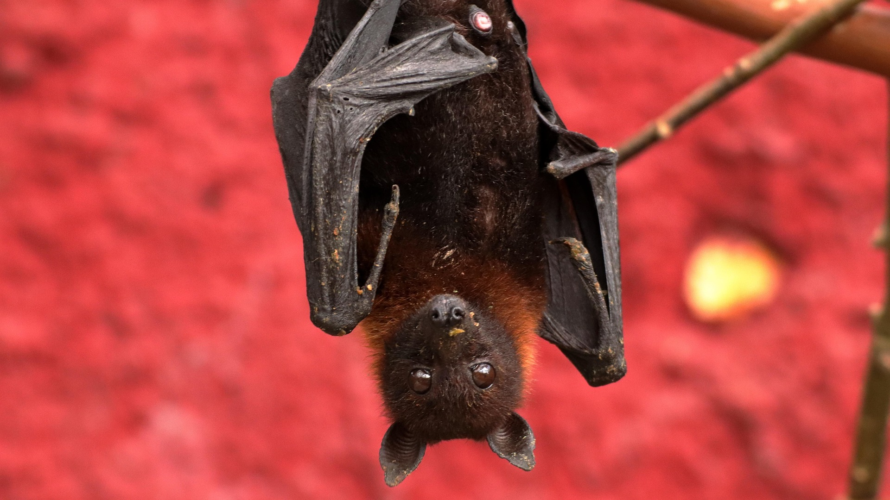

(Chiroptera)
El murciélago es un mamífero nocturno capaz de volar, conocido por su orientación mediante ecolocación y su papel fundamental en los ecosistemas. Históricamente ha sido objeto de mitos y leyendas, pero en la naturaleza ayuda a controlar insectos, polinizar flores y dispersar semillas. Gracias a su inteligencia y sentidos altamente desarrollados, los murciélagos pueden navegar en completa oscuridad, encontrar alimento y establecer colonias sociales. Dependiendo de la especie, su esperanza de vida oscila entre 10 y 20 años, necesitando refugios seguros, alimentación adecuada y ambientes que les permitan volar y reproducirse. Los murciélagos presentan una gran diversidad de tamaños, formas y hábitos alimenticios, desde insectívoros hasta frugívoros y hematófagos, siendo esenciales para el equilibrio de numerosos ecosistemas.
Características